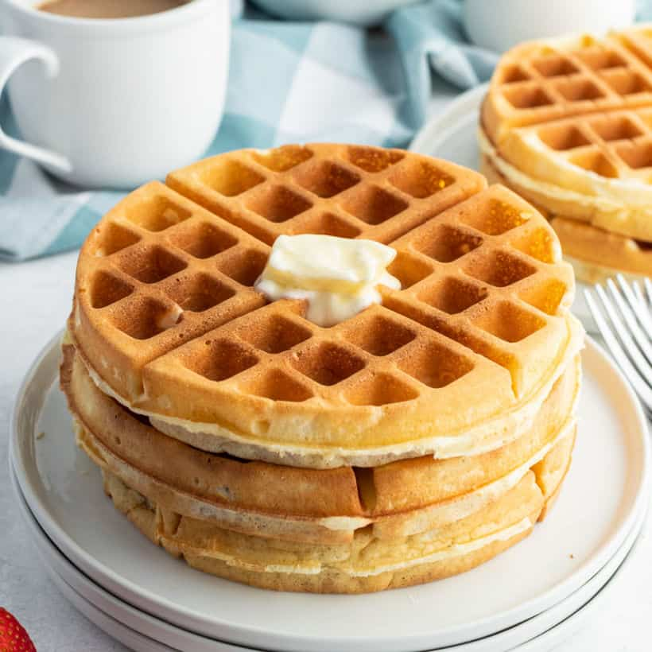

Waffles

Description
These mouthwater waffles come from a recipe I just made I saw on the internet. Aparently they are crispy golden, soft and fluffy, and the best waffles ever made. This is the recipe I, waffles are only good if they are from waffle house or hotels. I rest my case. Prep time is 5 minutes, cook time 10 minutes, and total time 15 minutes. It's 397 calories and serves 5 waffles!
Ingredients
- 2 cups All purpose flour
- 2 tbsp Sugar
- 4 tsp Baking powder
- 1/2 tsp Salt
- 6 tbsp Butter
- 1 1/2 cups Milk
- 2 Eggs
- 1 tsp Vanilla extract
Steps
- Preheat waffle iron
- In a large bowl combine the flour, sugar, baking powder and salt and whisk to combine.
- Warm the milk up in the microwave for just 1 minute, or heat until slightly warm on the stove top.
- In a separate small bowl whisk the eggs and stir in the warm milk, melted butter and vanilla extract. Pour the wet ingredients into the dry and whisk until blended.
- Scoop the batter into the preheated waffle iron and cook until the waffles are golden brown and crisp. Serve immediately or lay on a cooling rack until cool. Store in zip close bags in freezer.*
* To reheat waffles, place frozen waffle in toaster and cook until heated through and crisp on the outside.